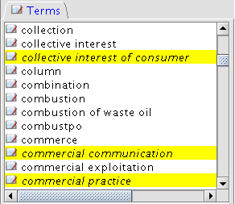
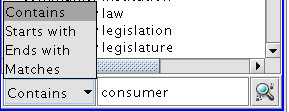

Lexicon
Browsing
The Terms
Panel

in the bottom-left side of the application shows the lexicon terms in
the selected global language
Highlighted terms in the list are those defined in the domain corpus

It is possible to filter the terms shown in the list based on a textual search on their lexicalization.
To visualize the full terms list perform an empty search
Clicking on the selected term in the list shows additional detailed information in the Contextual panels
Right-clicking on the selected term shows its lexical variants and allows insertion and markup in the edited document